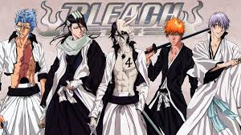

MY TOP 4 ANIME
One Piece

Plot Summary:
The series focuses on Monkey D. Luffy, a young man made of
rubber, whom, inspired by his childhood idol, the powerful
pirate Red-Haired Shanks, sets off on a journey from the
East Blue Sea to find the mythical treasure, the One Piece,
and proclaim himself the King of the Pirates.
Hunter X Hunter

Plot Summary:
The story focuses on a young boy named Gon Freecss who
discovers that his father, who left him at a young age, is
actually a world-renowned Hunter, a licensed professional
who specializes in fantastical pursuits such as locating
rare or unidentified animal species, treasure hunting,
surveying unexplored enclaves, or hunting down lawless
individuals. Gon departs on a journey to become a Hunter and
eventually find his father. Along the way, Gon meets various
other Hunters and encounters the paranormal.
Full Metal Alchemist

Plot Summary:
Set in the early 20th century, in a fictional universe in
which alchemy is a widely practiced science, the series
follows the journey of two alchemist brothers, Edward and
Alphonse Elric, who are searching for the philosopher's
stone to restore their bodies after a failed attempt to
bring their mother back to life using alchemy.
Bleach

Plot Summary:
It follows the adventures of the hotheaded teenager Ichigo
Kurosaki, who inherits his parents' destiny after he obtains
the powers of a Soul Reaper—a death personification similar
to the Grim Reaper—from another Soul Reaper, Rukia Kuchiki.